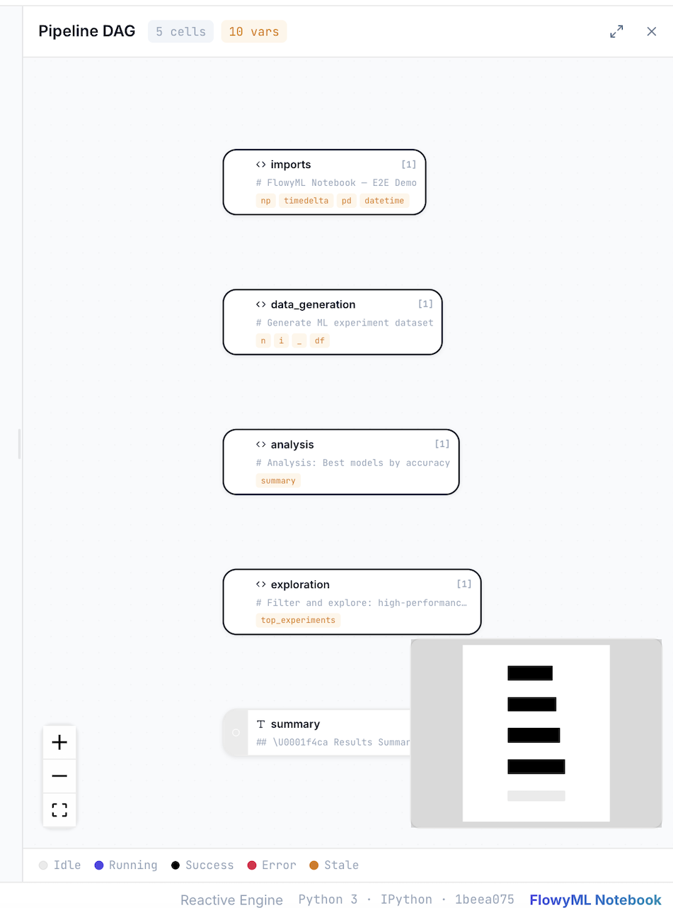
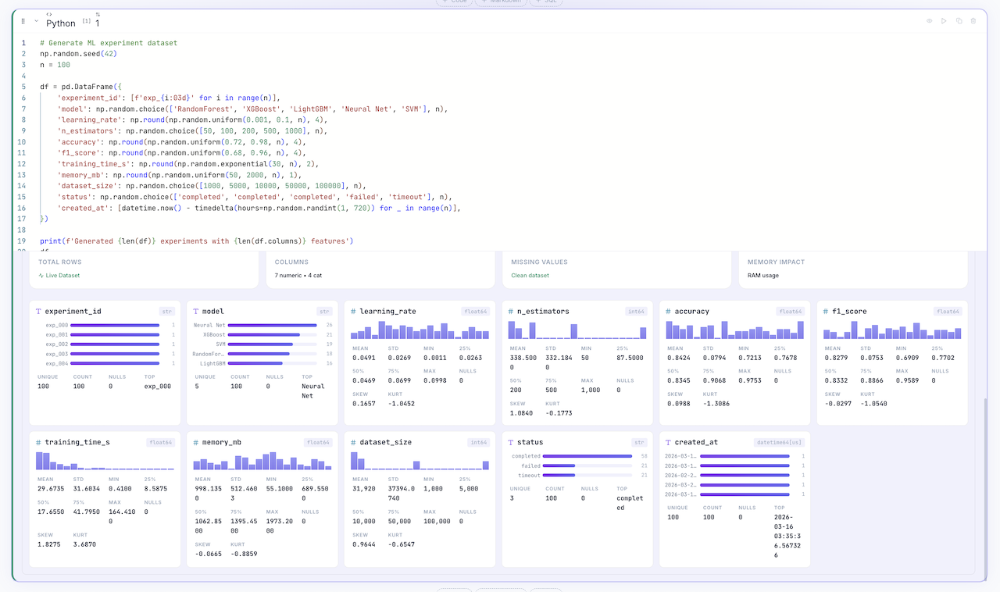
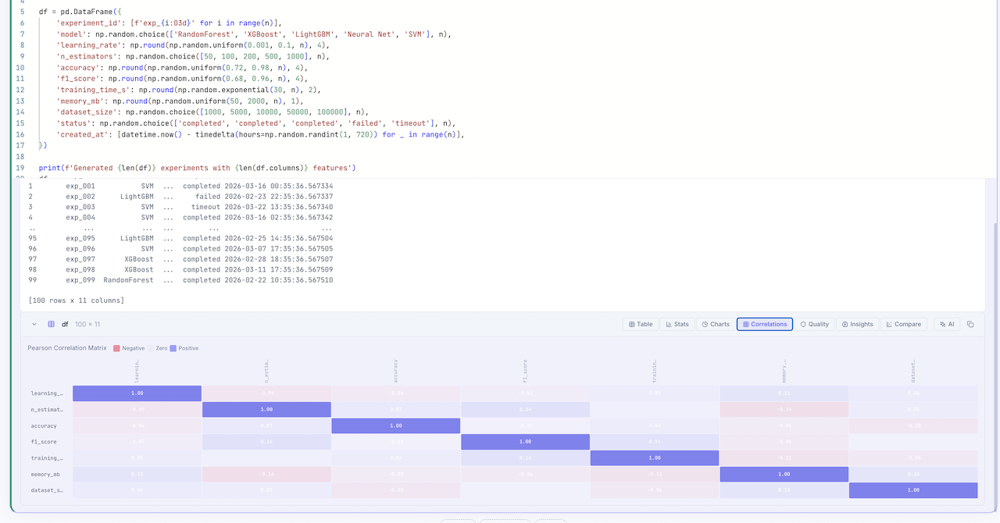
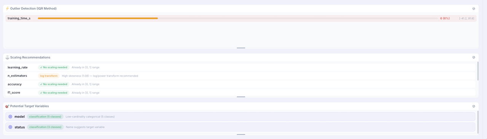
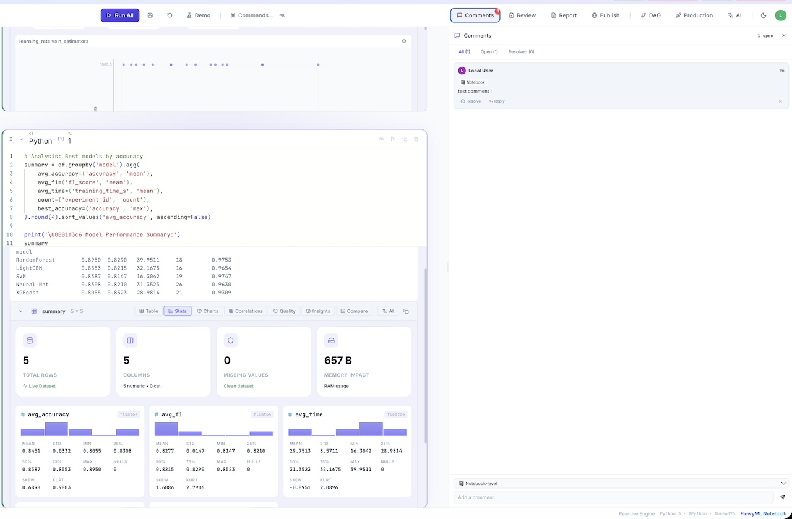
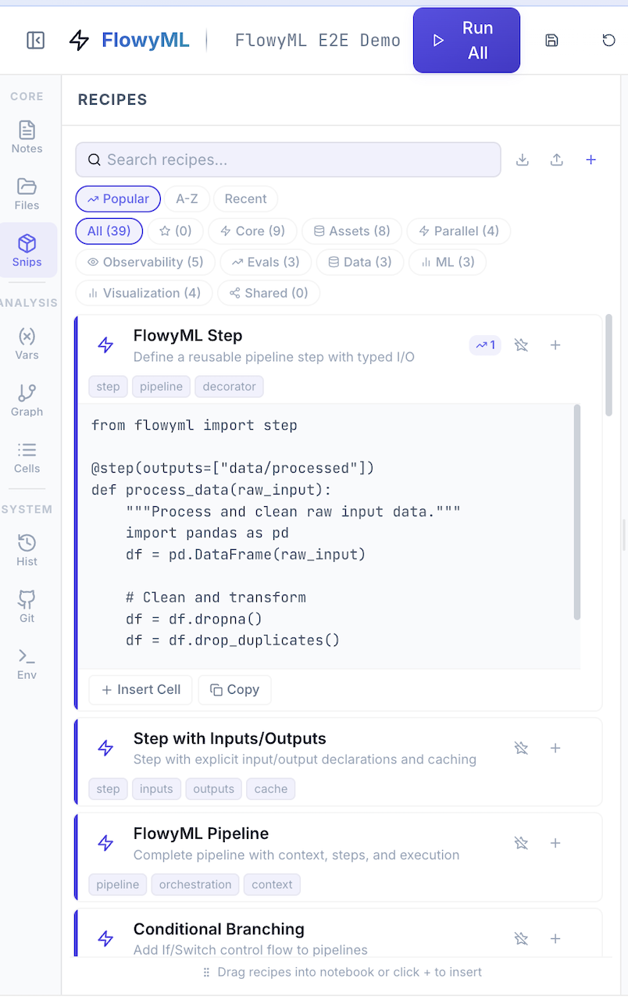
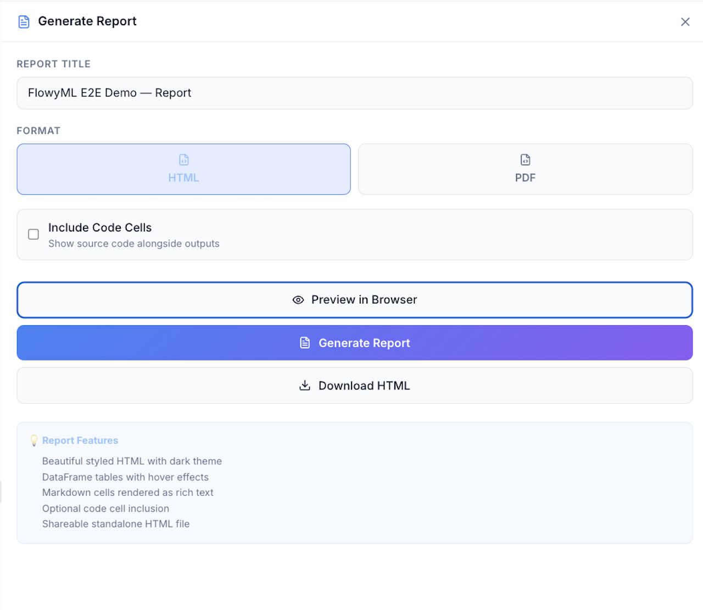
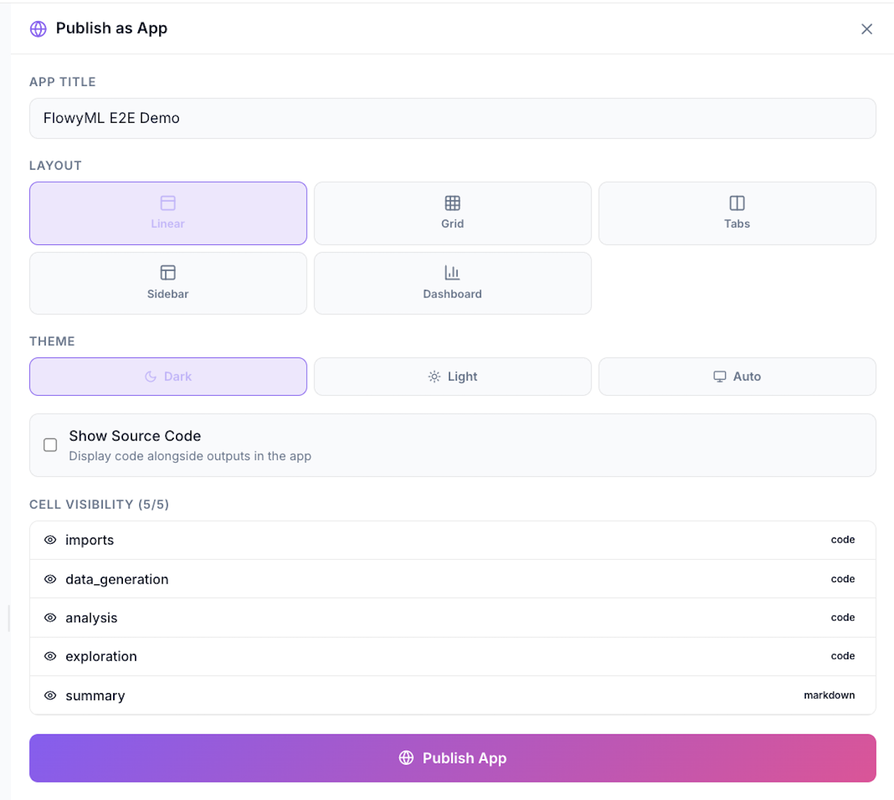
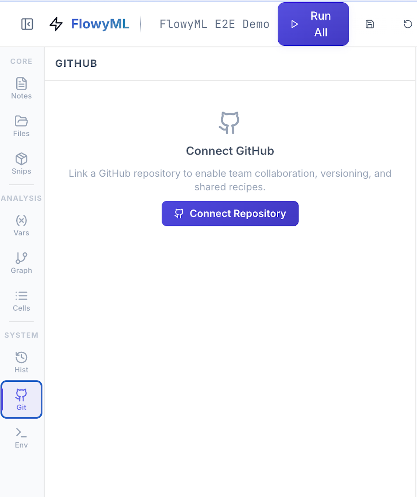
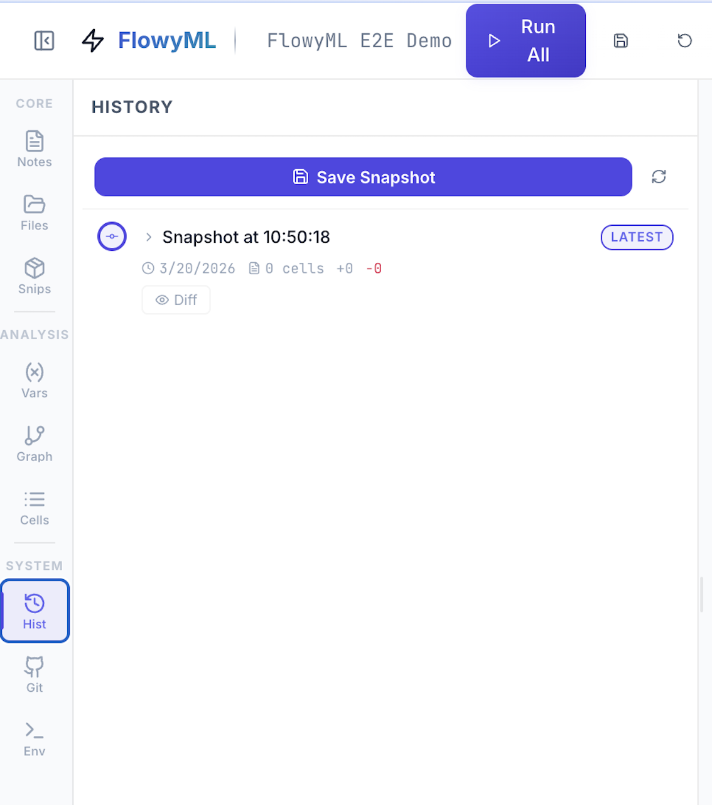

✨ Features
FlowyML Notebook is a complete ML development environment. Here's everything it offers — with real screenshots from the application.
 Reactive DAG Engine
Reactive DAG Engine
Every cell is a node in a dependency graph. When a variable changes, only dependent cells re-execute — no more stale state, no more "restart kernel and run all."
- Automatic dependency detection via AST analysis
- Visual DAG representation with cell status indicators
- Topological execution order for consistent results
- Parallel execution of independent branches

 Pure Python Storage
Pure Python Storage
Notebooks are saved as standard .py files. No JSON, no merge conflicts, no diffs you can't read.
- Git Friendly — Clean
git diff, meaningfulgit blame - Importable —
from my_notebook import df_clean - Lintable — Works with
ruff,flake8,mypy
 Rich Data Exploration
Rich Data Exploration
Every DataFrame gets automatic profiling — zero extra code. Toggle between Table, Stats, Charts, Correlations, Quality, Insights, Compare, and AI views.




See Data Exploration for the full breakdown.
 AI Assistant
AI Assistant
Integrated AI assistant (⌘J) with deep FlowyML ecosystem knowledge. The assistant is context-aware — it sees your notebook state, cell outputs, variable values, and error tracebacks.
- Generate — Create pipeline segments, data transformations, or visualizations from natural language
- Explain — Understand complex data patterns from outputs and profiling results
- Debug — Context-aware error resolution with stack trace analysis
- Optimize — Performance tuning, scaling recommendations, and ML hyperparameter suggestions
Supported Providers
| Provider | Models | Setup |
|---|---|---|
| OpenAI | GPT-4o, GPT-4o-mini | OPENAI_API_KEY env variable |
| Google AI | Gemini Pro, Gemini Ultra | GOOGLE_API_KEY env variable |
| Ollama | Llama 3.1, Mistral, CodeLlama, Phi-3 | Local — ollama serve (no API key needed) |
| Anthropic | Claude 3.5 Sonnet, Claude 3 Opus | ANTHROPIC_API_KEY env variable |
| Custom | Any OpenAI-compatible API | Set base_url to your endpoint |
100% Private with Ollama
Run AI entirely on your machine — no data ever leaves your laptop:
Usage Examples
The AI assistant generates code that respects the reactive DAG — it understands which variables are available from upstream cells and avoids creating stale dependencies.
 Comments & Review
Comments & Review
Collaborate directly in the notebook with inline comments. Add notebook-level or cell-level annotations for team discussions, with resolve/reply threading.

 Recipes — Reusable Templates
Recipes — Reusable Templates
39 built-in recipes across Core, Assets, Parallel, Observability, Evals, Data, ML, and Visualization categories. Drag into your notebook or click + to insert.

See Recipes for the full cookbook.
 Reports
Reports
Generate beautiful dark-themed HTML reports from your notebook with one click. Reports include styled tables with inline SVG histograms, correlation badges, and formatted outputs.

Report Features
- Dark-themed — Premium dark UI with Inter + JetBrains Mono fonts
- DataFrame rendering — Auto-generated stat cards, SVG histograms, and categorical bar charts inline
- Code toggle — Optionally include source code alongside outputs
- Markdown cells — Rendered as formatted headings, lists, and paragraphs
- CLI export —
fml-notebook export notebook.py --format html --output report.html
Via Python API
 Publish as App
Publish as App
Turn any notebook into an interactive web application with one click. Choose your layout, toggle cell visibility, and deploy:

Layout Options
| Layout | Description |
|---|---|
| Linear | Cells stacked vertically — classic report layout |
| Grid | Responsive grid — cells arranged in columns |
| Tabs | Each cell is a tab — ideal for dashboards |
| Sidebar | Input controls in sidebar, outputs in main area |
| Dashboard | Full dashboard mode with widgets and charts |
Via CLI
Widgets (sliders, dropdowns, toggles) become interactive controls in the deployed app — users can tweak parameters and see results update in real time.
 Production — Pipelines, Deploy & Assets
Production — Pipelines, Deploy & Assets
Ship notebooks directly to production:
Promote notebooks to production FlowyML pipelines with @step decorators.

Deploy as REST API, Docker Container, or Batch Pipeline — with full FlowyML infrastructure stack integration.

Track kernel assets (DataFrames, models) with size, shape, and type metadata.

 Git & Version Control
Git & Version Control
Full GitHub integration as the collaboration backend. No proprietary cloud, no database — just Git.


See Collaboration for the full workflow.
 Environment & Connection
Environment & Connection
Run standalone in Local Mode or connect to a remote FlowyML server for experiment tracking, pipeline export, and deployment.

See Integration for connection details.
 SQL First-Class
SQL First-Class
Mix Python and SQL seamlessly in the same notebook. SQL cells are powered by DuckDB (in-memory, zero config) or SQLAlchemy (for external databases).
How It Works
- SQL cells query your Python DataFrames directly — any variable holding a DataFrame is available as a table name
- Results are automatically converted to Pandas/Polars DataFrames
- The result DataFrame is assigned to a variable and participates in the reactive DAG
- Supports DuckDB (default, in-process) and SQLAlchemy (PostgreSQL, MySQL, SQLite, etc.)
External Databases
 Interactive Widgets
Interactive Widgets
Bind Python variables to professional-grade UI controls — sliders, dropdowns, toggles, date pickers, color pickers, text inputs, and more.
Widget Reactivity
Widgets participate in the reactive DAG — when a user changes a slider value, all downstream cells automatically re-execute. This is what powers the Publish as App feature: your notebook becomes a live, interactive dashboard.
Available Widgets
| Widget | Description | Code |
|---|---|---|
| Slider | Numeric range | fml.slider(...) |
| Select | Dropdown menu | fml.select(...) |
| Toggle | Boolean switch | fml.toggle(...) |
| Number | Numeric input | fml.number(...) |
| Text | Text input | fml.text(...) |
| Date | Date picker | fml.date_picker(...) |
| Color | Color picker | fml.color(...) |
| File | File upload | fml.file_upload(...) |
Deployment & Export
| Format | Command | Use Case |
|---|---|---|
| FlowyML Pipeline | fml-notebook export --format pipeline |
Production ML pipelines |
| HTML Report | fml-notebook export --format html |
Shareable dashboards |
| PDF Report | fml-notebook export --format pdf |
Documentation |
| Docker Image | fml-notebook export --format docker |
Containerized deployment |
| Web App | fml-notebook app notebook.py |
Interactive applications |